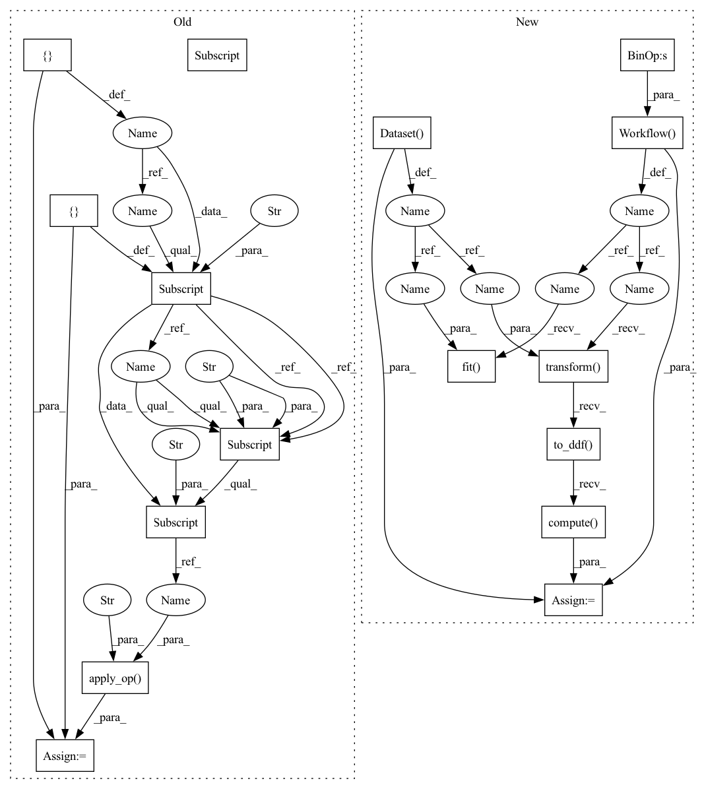

Pattern ID :5
Before Change
op = nvt.ops.FillMissing(42)
cont_names = ["x", "y"]
columns_ctx = {}
columns_ctx["continuous"] = {}
columns_ctx["continuous"]["base"] = cont_names
for col in cont_names:
idx = np.random.choice(df.shape[0] - 1, int(df.shape[0] * 0.2))
df[col].iloc[idx] = None
transformed = cudf.concat([op.apply_op( df, columns_ctx , "continuous" ) ])
assert_eq(transformed[cont_names], df[cont_names].fillna(42))
After Change
@pytest.mark.parametrize("engine", ["parquet"])
def test_fill_missing(tmpdir, df, dataset, engine):
cont_names = ["x", "y"]
cont_features = cont_names >> nvt.ops.FillMissing(fill_val=42)
for col in cont_names:
idx = np.random.choice(df.shape[0] - 1, int(df.shape[0] * 0.2))
df[col].iloc[idx] = None
df = df.reset_index()
dataset = nvt.Dataset( df)
processor = nvt.Workflow( cont_features)
processor.fit(dataset )
new_gdf = processor .transform(dataset).to_ddf().compute()
for col in cont_names:
assert np.all((df[col].fillna(42) - new_gdf[col]).abs().values <= 1e-2)
assert new_gdf[col].isna().sum() == 0
In pattern: SUPERPATTERN
Frequency: 5
Non-data size: 16
Instances Fragment ID: 16577
Project Name: nvidia/nvtabular
Commit Name: 4c92dffac4354d816178264bcfcdec722db2ec1c
Time: 2021-01-05
Author: github@benfrederickson.com
File Name: tests/unit/test_ops.py
M Class Name: AnonimousClass
N Class Name: AnonimousClass
M Method Name: test_fill_missing(4)
N Method Name: test_fill_missing(4)
M Parent Class:
N Parent Class:
M File Name: tests/unit/test_ops.py
N File Name: tests/unit/test_ops.py
M Start Line: 385
M End Line: 396
N Start Line: 207
N End Line: 223
Before Change
else:
hashed_cross_op = ops.HashedCross([cat_names], [num_buckets])
columns_ctx = {}
columns_ctx["categorical"] = {}
columns_ctx["categorical"]["base"] = list(cat_names)
// check sums for determinancy
checksums = []
for gdf in dataset.to_iter():
new_gdf = hashed_cross_op.apply_op( gdf, columns_ctx, "categorical" )
new_column_name = "_X_".join(cat_names)
assert np.all(new_gdf[new_column_name].values >= 0)
assert np.all(new_gdf[new_column_name].values <= 9)
checksums.append(new_gdf[new_column_name].sum())After Change
cat_names = [["name-string", "id"]]
num_buckets = 10
hashed_cross = cat_names >> ops.HashedCross(num_buckets)
dataset = nvt.Dataset( df)
processor = nvtabular.Workflow( hashed_cross)
processor.fit( dataset)
new_gdf = processor.transform(dataset).to_ddf().compute()
// check sums for determinancy
new_column_name = "_X_".join(cat_names[0])
assert np.all(new_gdf[new_column_name].values >= 0)
assert np.all(new_gdf[new_column_name].values <= 9)
checksum = new_gdf[new_column_name].sum()
new_gdf = processor.transform(dataset).to_ddf().compute()
assert new_gdf[new_column_name].sum() == checksum
Fragment ID: 16562
Project Name: nvidia/nvtabular
Commit Name: 4c92dffac4354d816178264bcfcdec722db2ec1c
Time: 2021-01-05
Author: github@benfrederickson.com
File Name: tests/unit/test_ops.py
M Class Name: AnonimousClass
N Class Name: AnonimousClass
M Method Name: test_hashed_cross(5)
N Method Name: test_hashed_cross(6)
M Parent Class:
N Parent Class:
M File Name: tests/unit/test_ops.py
N File Name: tests/unit/test_ops.py
M Start Line: 1058
M End Line: 1085
N Start Line: 659
N End Line: 674
Before Change
)
columns = ["userid", "timestamp"]
columns_ctx = {}
columns_ctx["all"] = {}
columns_ctx["all"]["base"] = columns
op = ops.DifferenceLag("userid", shift=[1, -1], columns=["timestamp"])
new_gdf = op.apply_op( df, columns_ctx, "all" , target_cols=["timestamp"])
assert new_gdf["timestamp_DifferenceLag_1"][0] is None
assert new_gdf["timestamp_DifferenceLag_1"][1] == 5
assert new_gdf["timestamp_DifferenceLag_1"][2] == 95After Change
{"userid": [0, 0, 0, 1, 1, 2], "timestamp": [1000, 1005, 1100, 2000, 2001, 3000]}
)
diff_features = ["timestamp"] >> ops.DifferenceLag(partition_cols=["userid"], shift=[1, -1])
dataset = nvt.Dataset( df)
processor = nvtabular.Workflow( diff_features)
processor.fit( dataset)
new_gdf = processor.transform(dataset).to_ddf().compute()
assert new_gdf["timestamp_difference_lag_1"][0] is None
assert new_gdf["timestamp_difference_lag_1"][1] == 5
assert new_gdf["timestamp_difference_lag_1"][2] == 95 Fragment ID: 16568
Project Name: nvidia/nvtabular
Commit Name: 4c92dffac4354d816178264bcfcdec722db2ec1c
Time: 2021-01-05
Author: github@benfrederickson.com
File Name: tests/unit/test_ops.py
M Class Name: AnonimousClass
N Class Name: AnonimousClass
M Method Name: test_difference_lag(0)
N Method Name: test_difference_lag(0)
M Parent Class:
N Parent Class:
M File Name: tests/unit/test_ops.py
N File Name: tests/unit/test_ops.py
M Start Line: 1031
M End Line: 1041
N Start Line: 633
N End Line: 641
Before Change
drop_duplicates_ext=drop_duplicates,
)
columns = mycols_pq if engine == "parquet" else mycols_csv
columns_ctx = {}
columns_ctx["all"] = {}
columns_ctx["all"]["base"] = columns
// Iterate, apply op, and check result
for gdf in dataset.to_iter():
new_gdf = merge_op.apply_op( gdf, columns_ctx, "all" )
check_gdf = gdf.merge(df_ext_check, how=how, on=on)
assert len(check_gdf) == len(new_gdf)
assert (new_gdf["id"] + shift).all() == new_gdf["new_col"].all()
assert gdf["id"].all() == new_gdf["id"].all()After Change
df_ext_check = df_ext_check[columns_ext]
if drop_duplicates:
df_ext_check.drop_duplicates(ignore_index=True, inplace=True)
joined = nvt.ColumnGroup(columns_left) >> nvt.ops.JoinExternal(
df_ext,
on,
how=how,
columns_ext=columns_ext,
cache=cache,
drop_duplicates_ext=drop_duplicates,
)
gdf = df.reset_index()
dataset = nvt.Dataset( gdf)
processor = nvt.Workflow( joined)
processor.fit( dataset)
new_gdf = processor.transform(dataset).to_ddf().compute() .reset_index()
check_gdf = gdf.merge(df_ext_check, how=how, on=on)
assert len(check_gdf) == len(new_gdf) Fragment ID: 16587
Project Name: nvidia/nvtabular
Commit Name: 4c92dffac4354d816178264bcfcdec722db2ec1c
Time: 2021-01-05
Author: github@benfrederickson.com
File Name: tests/unit/test_ops.py
M Class Name: AnonimousClass
N Class Name: AnonimousClass
M Method Name: test_join_external(8)
N Method Name: test_join_external(8)
M Parent Class:
N Parent Class:
M File Name: tests/unit/test_ops.py
N File Name: tests/unit/test_ops.py
M Start Line: 944
M End Line: 988
N Start Line: 548
N End Line: 590
Before Change
cont_names = ["x", "y"]
columns = mycols_pq if engine == "parquet" else mycols_csv
columns_ctx = {}
columns_ctx["all"] = {}
columns_ctx["all"]["base"] = columns
filter_op = ops.Filter(f=lambda df: df[df["y"] > 0.5])
new_gdf = filter_op.apply_op( df, columns_ctx, "all" , target_cols=columns)
assert new_gdf.columns.all() == df.columns.all()
// return isnull() rows
columns_ctx["continuous"] = {}After Change
idx = np.random.choice(df.shape[0] - 1, int(df.shape[0] * 0.2))
df[col].iloc[idx] = None
dataset = nvt.Dataset( df)
filtered = cont_names >> ops.Filter(f=lambda df: df[df.x.isnull()])
processor = nvtabular.Workflow(filtered)
processor.fit(dataset)
new_gdf = processor.transform(dataset).to_ddf().compute()
assert new_gdf.shape[0] < df.shape[0], "null values do not exist"
// again testing filtering by returning a series rather than a df
filtered = cont_names >> ops.Filter(f=lambda df: df.x.isnull())
processor = nvtabular.Workflow( filtered)
processor.fit( dataset)
new_gdf = processor.transform(dataset).to_ddf().compute()
assert new_gdf.shape[0] < df.shape[0], "null values do not exist"
// if the filter returns an invalid type we should get an exception immediately
// (rather than causing problems downstream in the workflow) Fragment ID: 16591
Project Name: nvidia/nvtabular
Commit Name: 4c92dffac4354d816178264bcfcdec722db2ec1c
Time: 2021-01-05
Author: github@benfrederickson.com
File Name: tests/unit/test_ops.py
M Class Name: AnonimousClass
N Class Name: AnonimousClass
M Method Name: test_filter(5)
N Method Name: test_filter(6)
M Parent Class:
N Parent Class:
M File Name: tests/unit/test_ops.py
N File Name: tests/unit/test_ops.py
M Start Line: 991
M End Line: 1027
N Start Line: 596
N End Line: 629